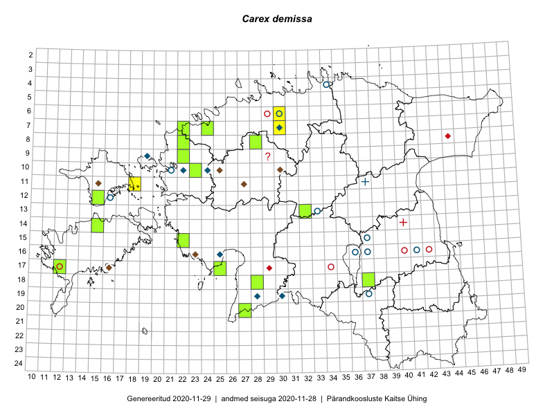

Carex demissa — sirptarn
Kaardile koondatud taksonid: Carex demissa Hornem. (24)

Kaart põhineb 24 kirjel, neist:
vaatlusi 3
eksemplare 21
Kaasaegsed1 leiukohad asuvad 15 ruudus.
Andmed “Eesti taimede levikuatlasest”,2 sulgudes ruutude arv:3
● 1971–2005 (4)
○ 1921–1970 (12)
△ kuni 1920 (1)
+ hävinud (0)
? kaheldav (5)
Lisaruudud teistest andmebaasidest:4
ELF: 2006– . . . (0)
PKÜ: 2006– . . . (0)
ELF: 1971–2005 (2)
PKÜ: 1997–2005 (5)
| Ruut | Vaatleja(d) | Vaatlusaeg | Kirje PlutoFis |
|---|---|---|---|
| 11-18 | Eeva-Maria Jeletsky, Tarmo Niitla | 2015-06-17 | ruut/ala: Carex demissa Hornem. |
| 13-32 | Meeli Mesipuu, Timo Luhamäe | 2015-06-08 | ruut/ala: Carex demissa Hornem. |
| 17-25 | Tiit Hallikma, Tõnu Ploompuu | 2016-07-06 | ruut/ala: Carex demissa Hornem. |
| 09-22 | Toomas Kukk | 2006-06-20 | TAA0048101: Carex demissa Hornem. |
| 09-22 | Toomas Kukk | 2006-06-20 | TAA0048102: Carex demissa Hornem. |
| 10-23 | Thea Kull | 2012-06-03 | TAA0048123: Carex demissa Hornem. |
| 14-15 | Toomas Kukk, Eerik Leibak | 2015-08-09 | TAA0135606: Carex demissa Hornem. |
| 14-15 | Toomas Kukk, Eerik Leibak | 2015-08-09 | TAA0135607: Carex demissa Hornem. |
| 14-15 | Toomas Kukk, Eerik Leibak | 2015-08-09 | TAA0135608: Carex demissa Hornem. |
| 07-24 | Eerik Leibak | 2010-05-31 | TAA0112749: Carex demissa Hornem. |
| 07-24 | Eerik Leibak | 2010-05-31 | TAA0112750: Carex demissa Hornem. |
| 07-22 | Eerik Leibak, Mari Reitalu | 2016-07-07 | TAA0137739: Carex demissa Hornem. |
| 07-22 | Eerik Leibak, Mari Reitalu | 2016-07-07 | TAA0137740: Carex demissa Hornem. |
| 08-22 | Eerik Leibak, Mari Reitalu | 2016-07-07 | TAA0137741: Carex demissa Hornem. |
| 08-22 | Eerik Leibak, Mari Reitalu | 2016-07-07 | TAA0137742: Carex demissa Hornem. |
| 20-27 | Indrek Tammekänd | 2015-08-22 | TAA0136104: Carex demissa Hornem. |
| 12-15 | Eeva-Maria Jeletsky, Tarmo Niitla | 2015-06-26 | TAA0119178: Carex demissa Hornem. |
| 15-22 | Indrek Tammekänd | 2016-06-14 | TAA0139839: Carex demissa Hornem. |
| 18-28 | Indrek Tammekänd | 2016-07-05 | TAA0139797: Carex demissa Hornem. |
| 17-25 | Tiit Hallikma, Tõnu Ploompuu | 2016-07-06 | TAA0134587: Carex demissa Hornem. |
| 13-32 | Meeli Mesipuu, Timo Luhamäe | 2015-06-08 | TAA0140879: Carex demissa Hornem. |
| 08-28 | Mari Reitalu, Eerik Leibak | 2017-08-08 | TAA0143220: Carex demissa Hornem. |
| 08-28 | Mari Reitalu, Eerik Leibak | 2017-08-08 | TAA0143221: Carex demissa Hornem. |
| 17-12 | Mari Reitalu | 2018-09-15 | TAA0149939: Carex demissa Hornem. |
Kaasaegsed leiukohad (tähistatud värvitud ruutudega) põhinevad peamiselt 2014–2019 välitööandmetel. Väiksemal määral on andmebaasi kantud vanemaid leiuandmeid aastatest 2006–2013.↩︎
Kukk, T., Kull, T., Eesti taimede levikuatlas. Eesti Maaülikool, Põllumajandus- ja Keskkonnainstituut, Tartu, 2005.↩︎
NB! 2005. aasta atlase andmestikus katavad uuemad leiud vanemaid. Näiteks kui liik on ruudus registreeritud 1971–2005, siis pole võimalik öelda, kas ta oli sellest ruudust teada ka enne 1970. aastat. Vana atlase andmetel hävinud ja kaheldavaid leiukohti pole hilisemate (taas)leidude põhjal korrigeeritud.↩︎
Eestimaa Looduse Fondi (ELF) ja Pärandkoosluste Kaitse Ühingu (PKÜ) andmebaasid sisaldavad inventeeritud koosluste kirjeldusi ja liigiloendeid. Neist andmekogudest on kaardile lisatud lisatud vaid need ruudud, millest uue atlase andmekogus taksoni kohta kirjeid veel pole. Kõrvale on jäetud teadaolevalt kaheldavad määrangud. Kaartidel katavad uuema perioodi andmed vanemaid, PKÜ omad ELFi omi. Kattumise tõttu võib kaardil näha olla vähem mingi kategooria ruute kui legendis olev arv näitab. ELFi ja PKÜ andmed ei kajastu hetkel vaatluste tabelis ega ruutude liigiloendites.↩︎